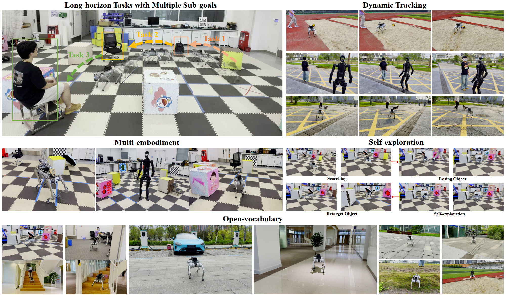
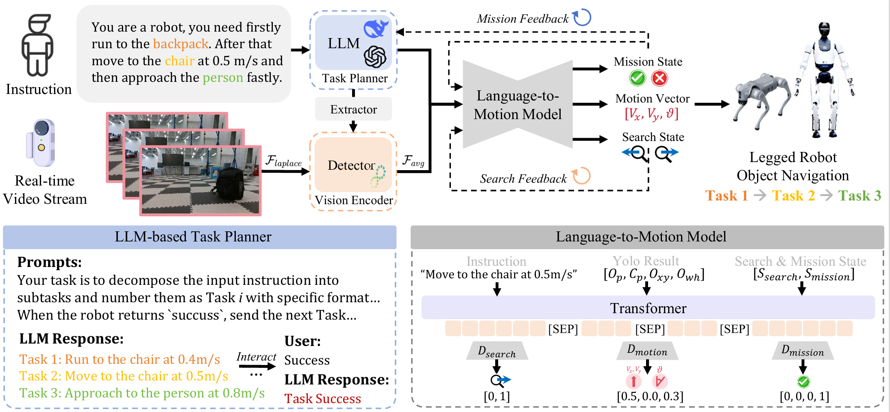
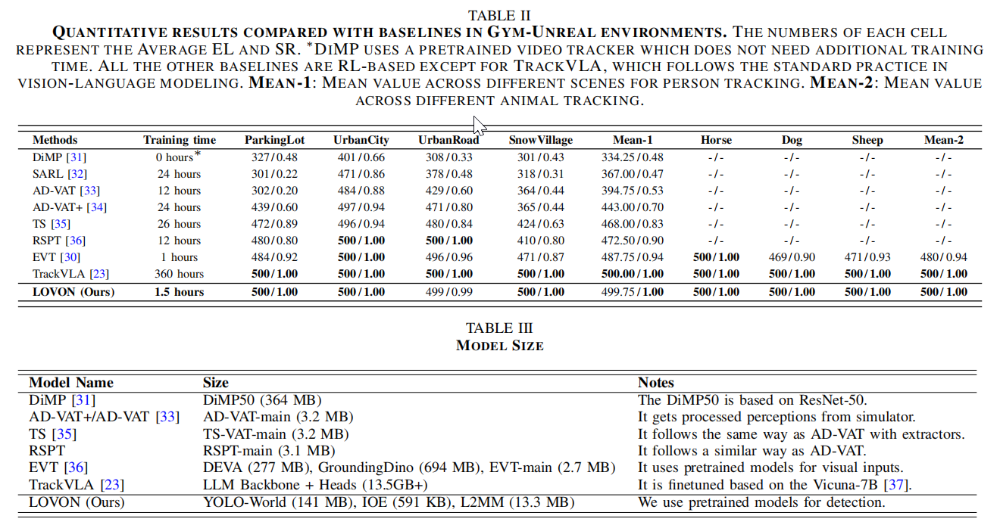

Large language models decompose complex long-horizon navigation missions into ordered basic instructions with adaptive replanning and execution logic.
Detect any object by natural language — no pre-defined categories required.
Visual stabilization that eliminates motion blur during dynamic locomotion.
Seamlessly deployable on Go2, B2 (quadruped), and H1-2 (humanoid) — same framework, different morphologies. Only 1.5 hours of training time with a compact model size.


LOVON operates across H1-2 humanoid, Go2 and B2 quadrupeds — same framework, seamless deployment.
Indoor offices, labs, stairs; outdoor parking, playgrounds, wild grass — detecting targets in real-time.
Multi-target navigation: "Run to the backpack, then to the chair at 0.5 m/s, then approach the person fastly."
An umbrella blocks the view — LOVON recovers from the occlusion and continues approaching the target.
Tracking a moving person in wild grass — the robot maintains safe distance and real-time detection.
Navigating spiral staircases and uneven surfaces while maintaining real-time target detection.
@article{daojie2025lovon,
title={LOVON: Legged Open-Vocabulary Object Navigator},
author={Peng, Daojie and Cao, Jiahang and Zhang, Qiang and Ma, Jun},
journal={arXiv preprint arXiv:2507.06747},
year={2025}
}